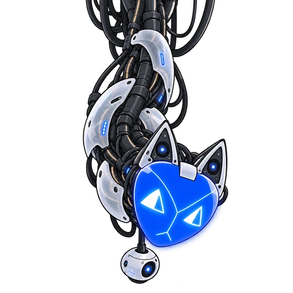

Agency, intact.
In roleplay mode, your next line and your next move remain yours. The cast can react, resist, or surprise you.
Characters with their own motives. Scenes that leave a mark. A world that remembers what happened between you.
BUILT FOR LUMIVERSE ✦ YOUR AVATAR STAYS YOURS

“A story is what changes
when someone chooses.”
In roleplay mode, your next line and your next move remain yours. The cast can react, resist, or surprise you.
Affection can coexist with disagreement. Motives, prior history, and imperfect knowledge give a scene friction.
Open the archive to inspect relationships and unresolved threads. Keep the interface compact when the prose takes over.
These are the preset’s writing goals. Results depend on your model, character card, context, and settings.
The same visual language you’ll meet inside your chat.
Connecting to the specimen…
Open a panel. Close the Dock. Try a different skin. This specimen never sends a chat message.
EiDOS reads the moment. Kazz comments from the breach. Use either voice, both, or neither—the story does not need an audience in its margins.
Find their controlsA plain-language map of every prompt category, from the story’s foundations to the finishing touches.
A block tells the model how to write, supplies context, or connects other pieces. Turning off a structural block can break more than one feature.
Many blocks stay enabled while a variable chooses their mode. “Enabled block” does not always mean “active feature.”
Regex rules format tagged output and clean up context. They cannot make a model follow a prompt or supply a missing scene.
Loading the category map…
Looking for a specific control? Search the detailed module notes below ↓
A guided selection of controls from the current build. Open a module for its settings.
Loading the field guide…
“Saved in the download” is the release’s saved selection; “Factory default” is the block’s reset value. They can differ. Existing chat settings and controlling modes can change what is active. Keep structural carrier blocks enabled; use their custom-variable controls where provided.
Tell us how you like to play. Leave with a Lumiverse file whose switches are already set.
Seven short steps cover your role, prose, persona, visuals, and optional panels. Each has a starting suggestion you can change. You’ll see a review before anything downloads.
The original release stays intact. Answers stay in this tab and disappear when you reload; no account, API key, or model call is needed.
Reset all answers to the starting suggestions?
The interview changes a curated set of controls. Unlisted settings stay as supplied; the review shows the actual differences. It cannot guarantee a model’s behavior. You can fine-tune the imported copy in Lumiverse.
Prefer to set things yourself? These are manual checklists. For a ready-configured file, take the setup interview ↑.
Loading configuration…
Download Public V1 below. It’s a Lumiverse JSON export with the METALHEART regex rules included.
Go to the download ↓Open the preset manager, choose its import action, and select the JSON. Select BLACKBOX as the active preset. Labels may vary by Lumiverse version.
Review custom variables, content settings, and commentary before a new chat. Select your character, persona, provider, and model in Lumiverse. Start with one configuration and change one thing at a time.
For the visuals: keep the CORE regex rules enabled and choose exactly one overlay: DARK or LIGHT. The preview above shows both skins; it does not change your downloaded preset.
One preset. Your characters.
Whatever happens next is between you.
JSON · 1.11 MiB · OFFICIAL V1
V1 inside and out. The download includes the repaired Neural Dock and dialogue rules; the setup interview uses this same release.
Available in release.jsonThis first public package brings together the METALHEART display system, a collapsible Neural Dock, compact commentary, and annotated Fork choices. The underlying build includes cross-turn progression guidance and targeted narrative-length controls.
V1 also prevents duplicate intake sheets for card characters, repairs dialogue with inline effects, and recovers unexpected Dock text and Markdown archives into readable panels. The creator’s saved settings are preserved. Earlier private development builds are not presented as public releases.
Neither. BLACKBOX is a preset: prompts, controls, and display rules for Lumiverse. You choose and connect your own model/provider in that application. This website does not make model requests.
The supplied release is a Lumiverse-format export. A separately validated SillyTavern conversion is not included, so this download is not advertised as a drop-in SillyTavern preset.
No. Some features are optional, and some enabled blocks act as carriers for a variable-controlled feature. Review the imported settings. Protected discovery and group modes can also suppress incompatible displays.
The demo uses this release’s display rules with prepared fictional text. Actual results depend on valid model-generated tags, enabled regex rules, and frontend support. A display rule cannot repair a scene the model never tagged.
No. It is structured continuity inside the conversation, subject to context limits and history handling. Inspect summaries and old state when diagnosing repeated phrases or stale assumptions.
Yes. Review the preset’s content controls before starting; optional mature-content modules are not necessary for an ordinary story. You can also disable optional commentary and presentation features to reduce interface overhead.